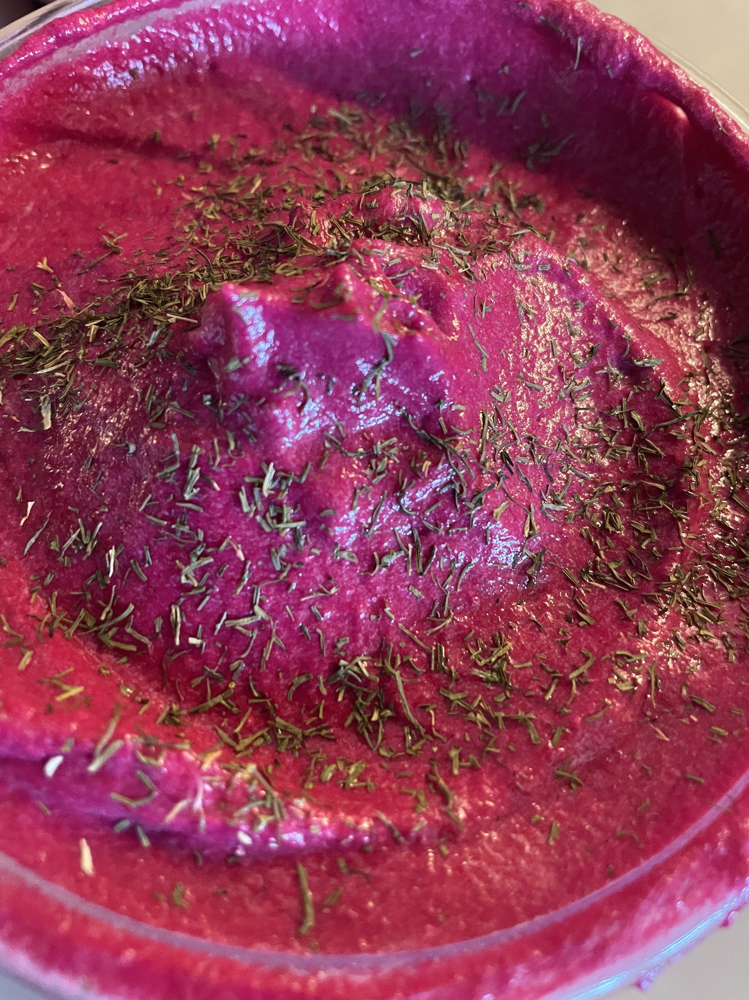

Dip de remolacha, feta y limón
Ingredients
4×
- 2 remolachas cocidas
- 100 g de feta
- el zumo de 1/2 limón
- 1 cda de aceite de oliva
- sal
- eneldo

Preparación
Paso 1
Triturar 2 remolachas cocidas con 100 g de feta, el zumo de 1/2 limón, 1 cda de aceite de oliva y sal hasta que quede cremoso.
Paso 2
Servir con un poco de eneldo por encima.